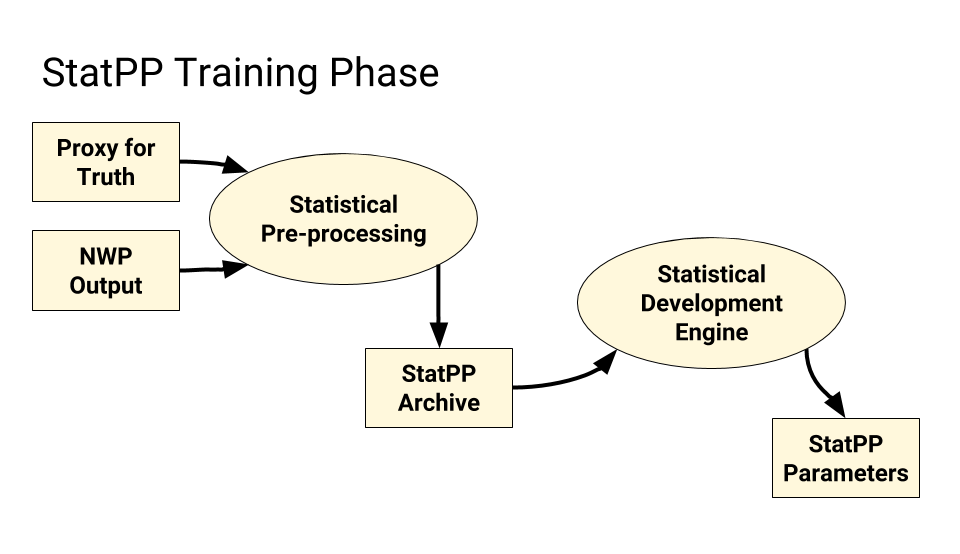
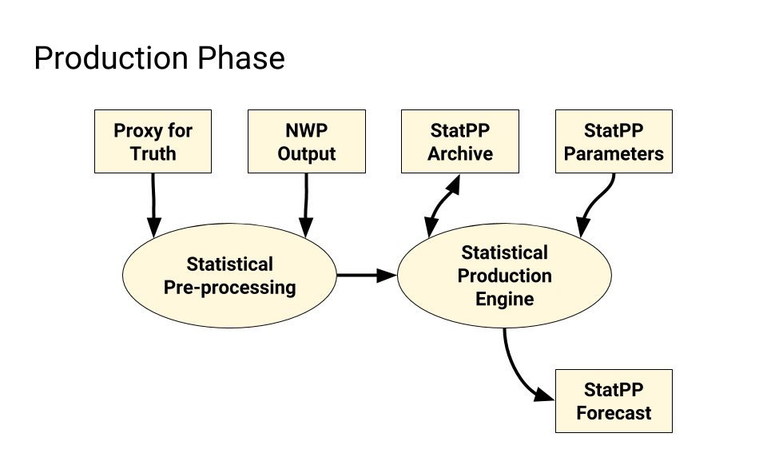

Statistical Post-Processing Background¶
Statistical post-processing (StatPP) refers to the adjustment of current real-time forecast guidance using the discrepancies noted between past forecasts and observations/analyses. Past experience has shown that StatPP is capable of modifying real-time NWP guidance that is biased, somewhat unskillful, and unreliable into guidance that is unbiased, much more skillful, downscaled to local conditions, and highly reliable, thus making it suitable for use in decision support with little or no manual modification by forecasters.” StatPP can also ameliorate deficiencies due to finite ensemble size and infer forecasts for weather elements that are not directly forecast by the NWP system. (Cf. Hamill and Peroutka, 2016: High-Level Functional Requirements for Statistical Post-Processing in NOAA.)
It is a truism among StatPP developers that they spend 10% of their time in science, 10% in statistics, and 80% in bookkeeping. Indeed, metadata storage and use are key aspects to any successful StatPP project. Daunting amounts of data characterize the training phase of many techniques. Some techniques defer these challenges to the production phase.
For many StatPP techniques, the Training Phase or Development Phase is a set of processes and software that notes discrepancies between past forecasts and observations/analyses and distills them into a set of parameters. The Model Output Statistics (MOS) and Kalman Filter techniques both have distinct training phases. Most bias-correction techniques, however, do not.
All StatPP techniques have a Production Phase or Implementation Phase, which is the set of processes and software that creates output forecasts.
The Proxy for Truth is the set of observations/analyses that guides the StatPP process. The name recognizes the biases and errors that afflict our best observing platforms and analytical techniques. The proxy for truth is generally accepted to be adequate for the task of StatPP.
Numerical Weather Prediction (NWP) generally begins with some form of Data Assimilation (DA) which is followed by one or more runs of a NWP system. Additional steps may be required to breed perturbed inputs to facilitate an ensemble of NWP runs. The final step of an NWP run is named the Model Post; this step generally converts output from the specialized coordinate reference systems used in NWP (e.g., spherical harmonics and sigma levels) to more standard coordinate reference systems. StatPP applications generally work with these standard outputs.
Many StatPP applications use some form of Statistical Pre-processing step where NWP output from multiple runs is captured in a StatPP Archive. This Statistical Pre-processing captures the data needed for the Training Phase. Often, NWP output is transformed in ways that facilitate statistical training. In general, if a Statistical Pre-processing step is required in the Training Phase, that same step will also appear in the Production Step.
A Training Phase, if present, will use one or more Statistical Development Engines to note discrepancies between past NWP output and a selected Proxy for Truth. These discrepancies are then captured in a set of StatPP Parameters which can be used in the Production Phase.
Figure 1, below, attempts to capture some of these concepts in a data flow diagram.
Figure 2, below, also captures these concepts, but applies them to the Production Phase.
